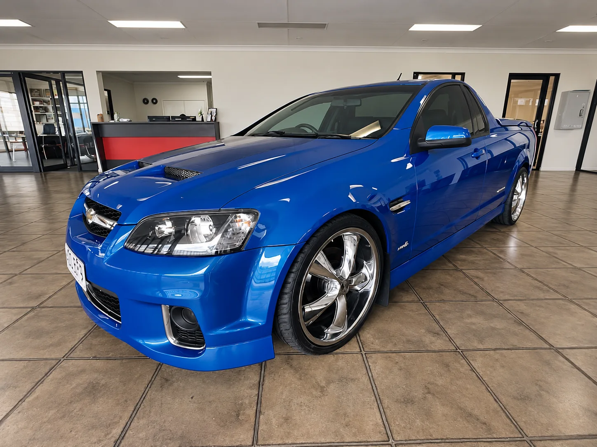

Side & rear windows · Cairns
Side & rear
windows
Smashed door glass, quarter glass or a shattered rear screen replaced — so your car is secure and weather-tight again.
Side windows
Secure again,
fast
Broken side or rear glass leaves your car open to the weather and to theft. Frank replaces door glass, quarter glass and rear screens on all makes and models.
Call or text with your vehicle details and which window is broken.
- Door glass, quarter glass and rear screens
- All makes and models
- Workshop at 209 Bunda Street, Parramatta Park

How it works
Get it sorted
Tell us the window
Which door or panel, and your make and model.
Get a quote
We confirm the right glass for your vehicle.
Book in
Bring the car to our Cairns workshop.
Done
New glass fitted and checked.
Questions
Good to know
Can you replace rear windscreens?
Yes, along with door glass and quarter glass.
Do you tint replacement glass?
We also do window tinting — ask about it when you book. See window tinting.
Where are you?
209 Bunda Street, Parramatta Park — opposite Cairns Central.
More from Frank
Other services


Broken glass?
Call or text Frank with your vehicle and a photo of the damage.